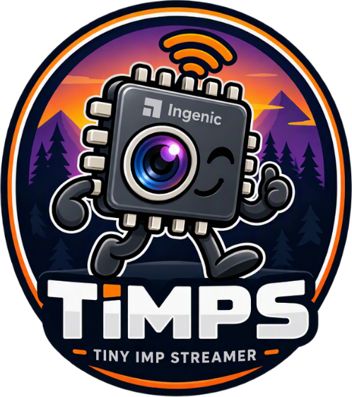
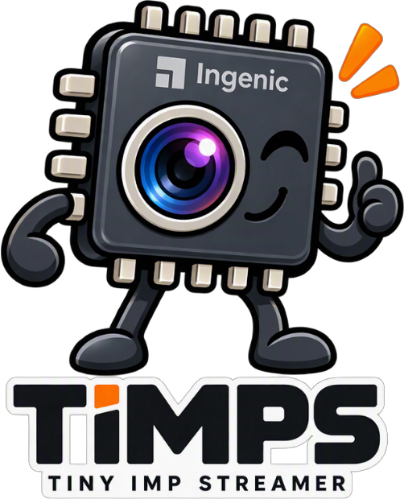

timps tiny imp streamer
A small RTSP / fragmented-MP4 / MJPEG / WebRTC / SRT streamer for
Ingenic SoC IP cameras. Pure C, built straight on libimp, with a live JSON
control API, native day/night and motion detection. One of the streamer choices in
thingino firmware.
Features
Everything a camera needs, in one small process.
Streaming
RTSP with H.264/H.265 and AAC/G.711, fragmented MP4 for the browser (MSE), JPEG snapshot and MJPEG. Optional RTSPS/HTTPS, MPEG-TS over SRT and WebRTC/WHEP.
On-demand encoding
A stream is encoded only while a client watches. The frame sources keep running by default, so exposure and day/night stay correct while nobody watches.
Live control API
GET/POST /control: ISP image, encoder, OSD, audio, motion, day/night, changed live and persisted. caps says what this SoC and build support.
Event stream
GET /events (SSE) pushes motion, day/night and stats events instead of polling.
Day/night
Native detection from the ISP exposure with short IR looks and day checks, or a fixed time window, or real sunrise and sunset. Replaces thingino's daynightd.
Motion detection
IMP_IVS grid with live per-cell state for a preview overlay and an on_motion hook.
OSD and privacy
Per-stream TrueType OSD with placeholders (time, hostname, fps...), outlines, logos, and privacy masks, all live.
Recording
Continuous or motion-triggered fMP4 segments to SD with pre/post-roll and pruning, plus JPEG timelapse.
Audio both ways
timps owns the speaker: ONVIF backchannel, browser microphone over WebSocket, and a system-sound play queue.
ROI, crop and rotation
Encoder ROI, ISP crop/zoom and 90/270 rotation where the SoC and libimp allow it, tiered per SoC in caps.
Test pattern
With OpenIMP: synthetic pictures, scripted moving objects scored against the motion detection, or the sensor's own pattern.
Security
RTSP Digest, HTTP Digest/Basic and a /control token with CORS.
Supported SoCs
One source tree, one PLATFORM switch. Features differ per SoC and libimp; the
capability matrix has the details.
What's new in v1.12.0
Released 2026-11-07. Full list in the changelog.
- Full T30 support: rotation 90/270 for doorbells, H.265 and live rate control with OpenIMP, ISP keys (DPC, RawDRC, antifog, noise reduction) and encoder ROI.
- One rotation path: T10/T20/T21/T23/T30 rotate through OpenIMP's frame source; the old T23 software rotate is gone (a T23
rotation = 90now turns the other way). - T40:
image.ae_compensationandimage.max_again, on the vendor and the OpenIMP libimp. - Calmer dawns: day/night skips IR looks that cannot find day and judges a creeping light with what the last check measured: about half the morning IR looks and fewer failed day checks.
- Always-on frame sources:
general.fs_keepalivedefaults to 1, so exposure and day/night keep working while nobody watches.
Endpoints
Defaults; ports and paths are configurable.
| URL | What |
|---|---|
rtsp://<ip>:554/ch0 | main stream, video and audio |
rtsp://<ip>:554/ch1 | sub stream |
http://<ip>:8880/ | browser preview (fMP4 over MSE, with audio) |
http://<ip>:8880/stream.mp4 | fragmented MP4 for ffplay / VLC |
http://<ip>:8880/snapshot.jpg | latest JPEG |
http://<ip>:8880/stream.mjpeg | MJPEG |
http://<ip>:8880/control | live JSON control and status API |
http://<ip>:8880/events | server-sent events: motion, day/night, stats |
http://<ip>:8880/webrtc/whep | WebRTC (WHEP), H.264 and G.711 |
wss://<ip>:8880/talk | browser microphone to the camera speaker |
Get it
timps ships as a thingino package.
make menuconfig # Streamer Packages -> Streamer -> timps make # build the firmware, flash as usual
Building by hand, every USE_* switch and the simulator: see
Building.
For the open camera stack it runs on, see OpenIMP.

Documentation
Searchable, built from the wiki in the repository. Open the docs.